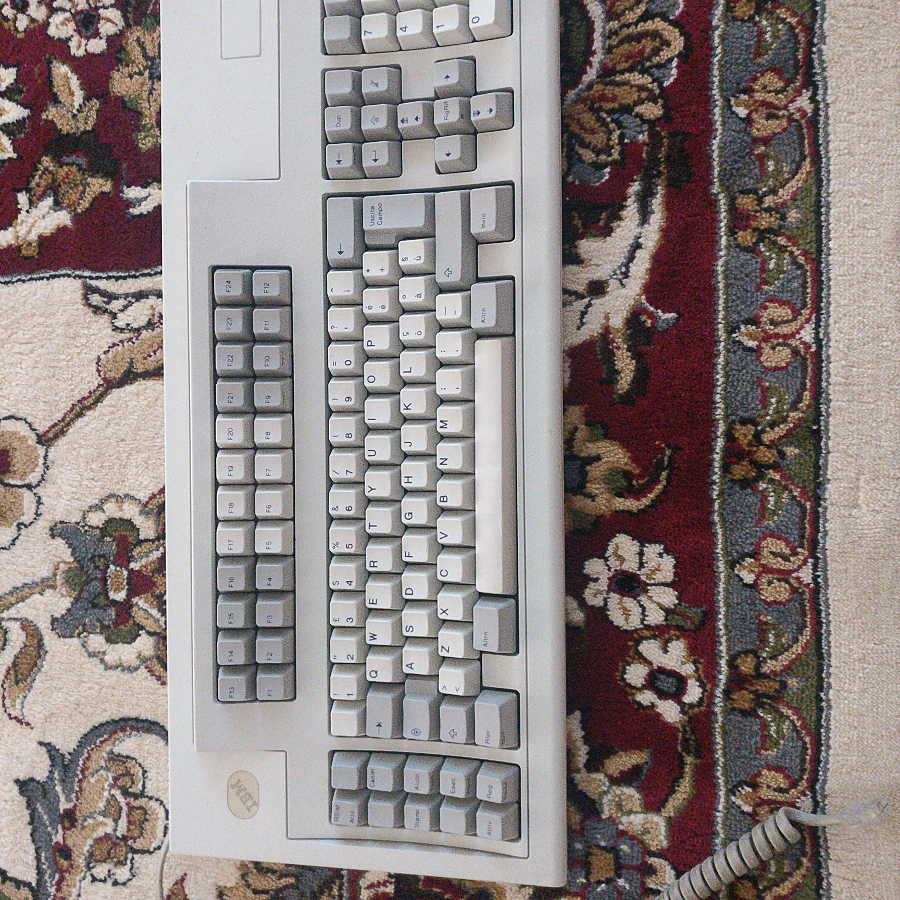

Ibm M122 “battlecruiser” restoration
I love mechanical keyboards and typing on them. I love retro comuputing.
This means that I love IBM buckling spring keyboards.
What I will share with you in this (probably long) post is my journey to restore a very poorly shaped IBM m122 battlecruiser keyboard.
Beginning
Date: 6 august 2020
After experiencing the true feeling and sound of buckling spring switches on an IBM enhanced keyboard (thank you Bonny), my research on local markets began.
I found an insertion for a used, in good condition IBM m122. The guy had some knowledge on the keyboard but not enugh to get it working so the keyboard had been on his shelf for some years.
Two days after and 45€ (shipping included) later my new fancy keyboard arrived.

A part from a non functoning spacebar (that I known of) and a little bit of wiggle on the numpad, the investment seemed to be payed off.
The cosmetic appearance of the item was excellent so my hope was up.
Did I only know…
Inspection
After the arrival the